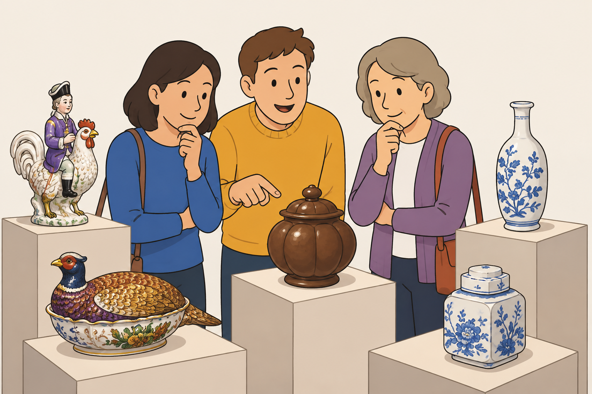

Mit dem Feld kommen Sie zu den Texten von der Ausstellung:
Die Ausstellung heißt:
Der Schein trügt.
Das bedeutet:
Die Menschen denken: Der Gegenstand ist so.
Der Gegenstand ist aber ganz anders.
In der Ausstellung sind mehrere seltsame Gegenstände.
Sie können raten:
- Was ist der Gegenstand?
- Was macht man mit dem Gegenstand?
Andere Menschen haben auch geraten.
Die Ideen von den anderen Menschen können Ihnen
beim Raten helfen.

Die richtige Antwort finden Sie im Text.
Wie bedienen Sie diese Seite?
So kommen Sie zu dem
Text von vorher:
Klicken Sie auf den
gelben Kreis mit dem Dreieck.
So kommen Sie zu dem
Text von danach:
Klicken Sie auf den
orangen Kreis mit dem Dreieck.
So können Sie die Texte
anhören
Klicken Sie auf den
Kreis mit dem Lautsprecher.
Wenn der Text vorgelesen wird:
Der Kreis mit dem Lautsprecher ist blau.
Wenn der Text zu Ende ist:
Der Kreis mit dem Lautsprecher ist wieder weiß.
Mit dem Feld kommen Sie zu den Texten von der Ausstellung: